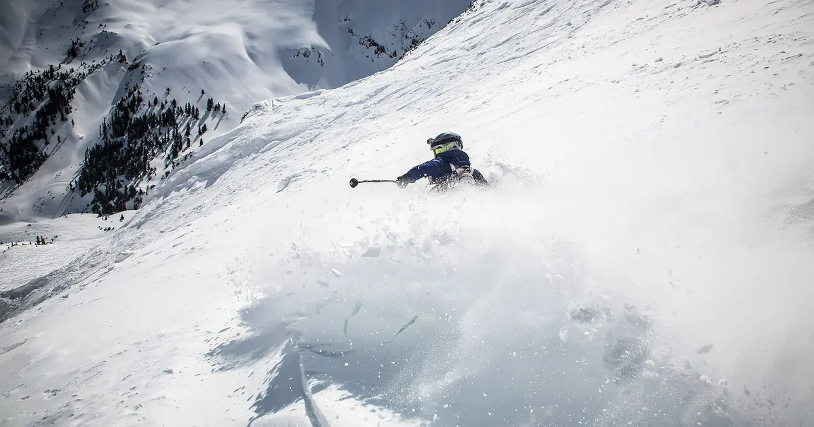
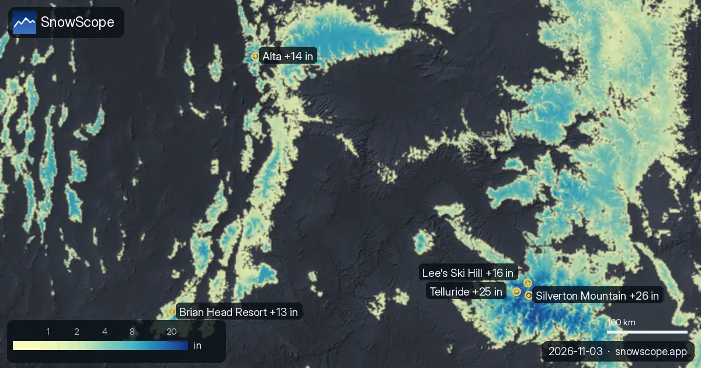
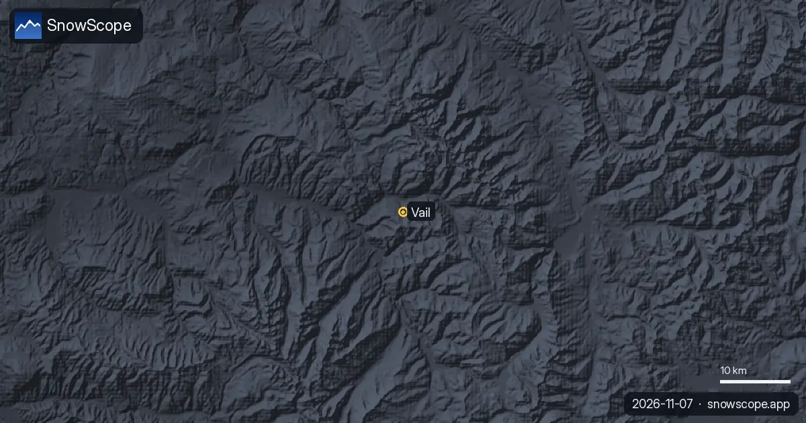
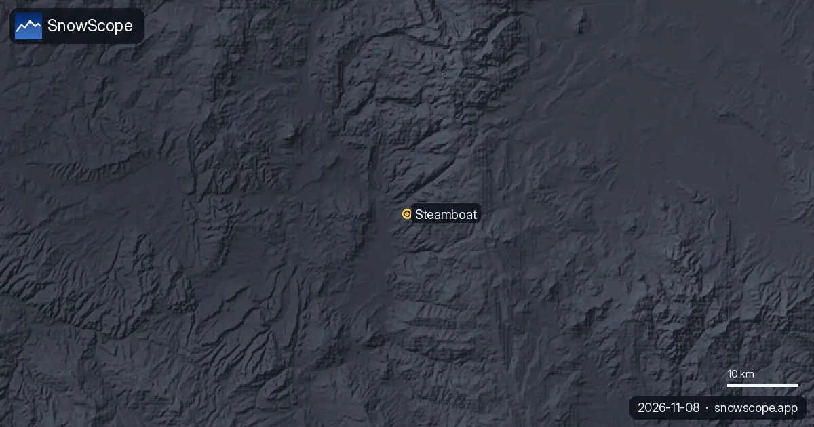

تلج جديد فغرب ميريكان: 26 إنش ف 72 ساعة ف Silverton Mountain (3 نونبر)
Silverton Mountain طاح فيها 26 إنش (66 سم) ديال تلج جديد ف 72 ساعة اللي فاتو. دابا فيها تقريبا 52 إنش (131 سم) فالجهة الفوقانية، حسب الموديل ديال التلج ديالنا.
شوف توقعات التلج مباشرة ديال Silverton Mountain فالتطبيق ديال SnowScopeالعلو ديال التلج، التنبيهات والخريطة 3D، فابور.
فين طاح التلج الجديد
فبلايص أخرى، Telluride، Lee's Ski Hill و Alta طاح فيهم 25 إنش (64 سم)، 16 إنش (40 سم) و 14 إنش (36 سم) ف 72 ساعة اللي فاتو.
143 محطة من 195 فغرب ميريكان فيهم التلج فالجهة الفوقانية اليوم، والموديل ديالنا كيحسب 95630 ميل² (247680 كم²) ديال الأرض اللي فيها التلج.
| المحطة | العلو ديال التلج | تلج جديد، 72 س | جاي، الأيام الجاية | الفوق |
|---|---|---|---|---|
| Silverton Mountain | 52 إنش (131 سم) | 26 إنش (66 سم) | 2 إنش (5 سم) | 10974 قدم (3345 م) |
| Telluride | 51 إنش (130 سم) | 25 إنش (64 سم) | 2 إنش (5 سم) | 12507 قدم (3812 م) |
| Lee's Ski Hill | 34 إنش (87 سم) | 16 إنش (40 سم) | 2 إنش (5 سم) | 7943 قدم (2421 م) |
| Alta | 15 إنش (37 سم) | 14 إنش (36 سم) | 1 إنش (2 سم) | 10554 قدم (3217 م) |
| Brian Head Resort | 17 إنش (44 سم) | 13 إنش (34 سم) | 0 إنش (1 سم) | 10909 قدم (3325 م) |

شنو قاسو المحطات
محطة القياس Chepeta (10489 قدم / 3197 م) قاست 20 إنش (51 سم) ديال التلج فالأرض نهار 1 نونبر، منهم 12 إنش (30 سم) تلج جديد ف 24 ساعة. محطة القياس Red Mountain Pass (11060 قدم / 3371 م) قاست 24 إنش (61 سم) ديال التلج فالأرض نهار 1 نونبر، منهم 11 إنش (28 سم) تلج جديد ف 24 ساعة. محطة القياس Bison Lake (10951 قدم / 3338 م) قاست 15 إنش (38 سم) ديال التلج فالأرض نهار 1 نونبر، منهم 10 إنش (25 سم) تلج جديد ف 24 ساعة.
الأرقام ديال المحطات ديال التزلج تقديرات ديال الموديل للجهة الفوقانية؛ محطات القياس كتقيس فنقطة وحدة، فالتاريخ المكتوب.
العلو، الجهات والحد ديال التلج
العلو مهم: ف Silverton Mountain، الموديل ديالنا كيعطي 23 إنش (58 سم) فالفوق (10974 قدم / 3345 م)، 17 إنش (43 سم) فالوسط (10643 قدم / 3244 م) و 13 إنش (32 سم) فالتحت (10312 قدم / 3143 م).
ف Silverton Mountain، علو الجليد غادي يكون بين 8793 قدم (2680 م) و 11220 قدم (3420 م) نهار 3 نونبر، فوق أعلى نقطة فالمحطة (10974 قدم (3345 م)): داك النهار يمكن تكون الشتا ولا تلج مبلول فكاع البيستات.
شنو جاي
حتى ل 6 نونبر، التوقعات ديالنا كتعطي 2 إنش (5 سم) ف Silverton Mountain، 2 إنش (5 سم) ف Telluride و 2 إنش (5 سم) ف Lee's Ski Hill.
التوقعات ديال شي أيام يمكن تتبدل: عاود شوف الخريطة نهار قبل ما تسافر.
السلامة وخطر الانهيارات
المستوى الرسمي ديال خطر الانهيارات فالمنطقة ديال Silverton Mountain اليوم هو 3 من 5 (Colorado Avalanche Information Center).
من بعد التلج الجديد، الريح كتجمعو فالجهات المحمية. برا البيست، الأيام الأولى هي اللي خاصها حذر كثر.
نصايح للي كيتزلجو
- التلج الجديد كيكون مزيان فالساعات الأولى: سير بكري، قبل الشمس والناس.
- قلب على التلج فالعلو وفالجهات اللي كتشوف للشمال: كيحافظو عليه كثر، والجهات اللي كتشوف للجنوب كيمشي ليهم بالشمس.
- قبل ما تخرج من البيست ولا دير جولة، قرا النشرة الرسمية ديال الانهيارات (الروابط لتحت).
- التلج فالخريطة ماكيعنيش بلي المحطة محلولة: شوف التيليسييج والتواريخ فالموقع ديال المحطة.
- فعّل تنبيه ديال التلج الطري فالتطبيق ديال SnowScope باش تعرف إمتى Silverton Mountain يجيها تلج جديد.
على هاد الأرقام
العلو ديال التلج فالمحطات هو أكثر تلج فالجهة الفوقانية حسب الموديل ديال التلج ديال SnowScope (تقريبا 1 كم، الحساب ديال 3 نونبر)؛ هادو تقديرات لمنطقة، ماشي قياس فنقطة وحدة. الأرقام ديال محطات القياس مقاسة فالتاريخ المكتوب. التوقعات يمكن تتبدل. ديما شوف النشرة الرسمية ديال الانهيارات قبل ما تخرج من البيست.
النشرات الرسمية ديال الانهيارات: Colorado Avalanche Information Center
كيفاش تستاشهد بهاد المقال
للبحث، التعليم ولا الصحافة: الأرقام والرسومات تقدر تعاود تخدم بيهم بحرية تحت CC BY 4.0 مع هاد الاستشهاد.
SnowScope (2026), تلج جديد فغرب ميريكان: 26 إنش ف 72 ساعة ف Silverton Mountain (3 نونبر), https://snowscope.app/blog/ar/2026/11/us-west-fresh-snow-powder-alert-3-november-2026.html, تشاف ف 2026-11-03
SnowScope (Atlas Labs). (2026, November 3). تلج جديد فغرب ميريكان: 26 إنش ف 72 ساعة ف Silverton Mountain (3 نونبر). SnowScope snow reports. https://snowscope.app/blog/ar/2026/11/us-west-fresh-snow-powder-alert-3-november-2026.html
BibTeX
@misc{snowscope2026uswestfreshsnowpowderale,
author = {{SnowScope (Atlas Labs)}},
title = {تلج جديد فغرب ميريكان: 26 إنش ف 72 ساعة ف Silverton Mountain (3 نونبر)},
year = {2026},
month = nov,
howpublished = {\url{https://snowscope.app/blog/ar/2026/11/us-west-fresh-snow-powder-alert-3-november-2026.html}},
note = {Published 2026-11-03 16:31 UTC; accessed 2026-11-03}
}· CC BY 4.0 · الطريقة، الداتا والأدوات →
Silverton Mountain: التلج والحرارة حسب العلو، هاد الشتا مقارنة مع اللي فاتت (الأدوات) →
تابع Silverton Mountain
فابور: ميساج ملي يجي التلج، والتوقعات كل صباح.
تقارير أخرى ديال التلج

Telluride، حالة التلج: طبقة ديال 45 إنش فالجهة الفوقانية (8 نونبر). أكثر تلج فغرب ميريكان كاين ف Kendall Mountain: تقريبا 47 إنش (120 سم) فالجهة …

Vail بالأرقام: القمة العادية تقريبا 64 in (162 cm) فالوسط ف 46 شتوة اللي فاتو، مارس أكثر شهر فيه التلج، مع البيستات، الطريق والسلامة.

Steamboat فـ Colorado للعائلات: شنو كيناسب الصغار بزاف، الدراري، المراهقين والواليدين، مع التلج ديال 46 شتوة اللي فاتو فتلاتة ديال العلوات.